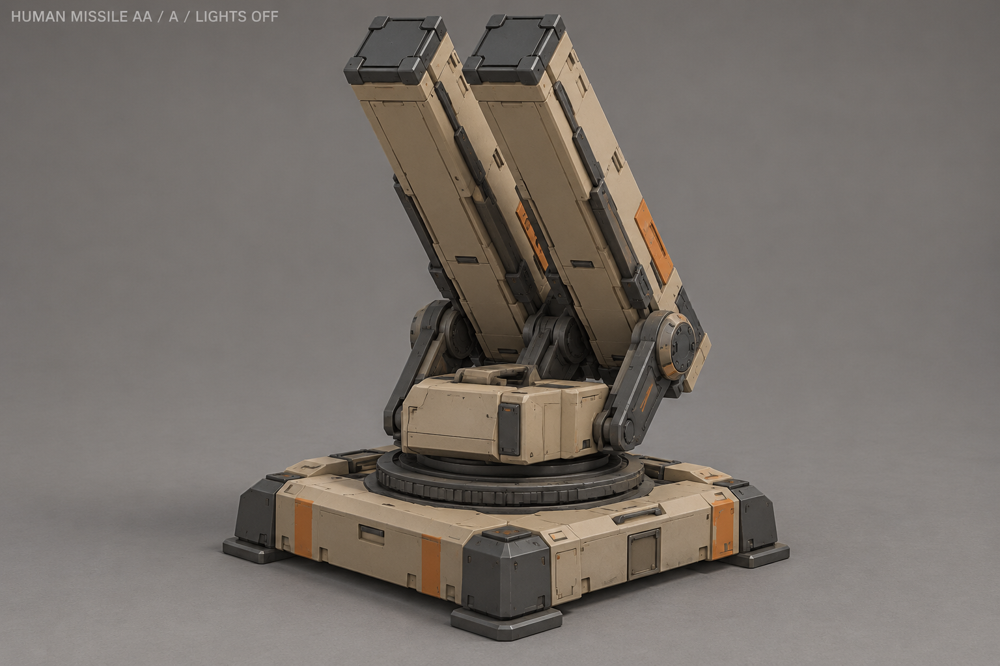
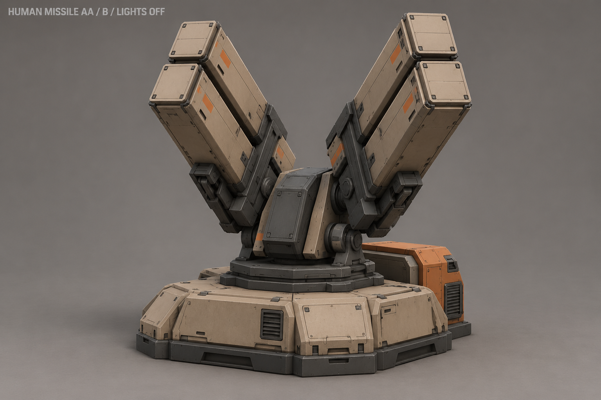
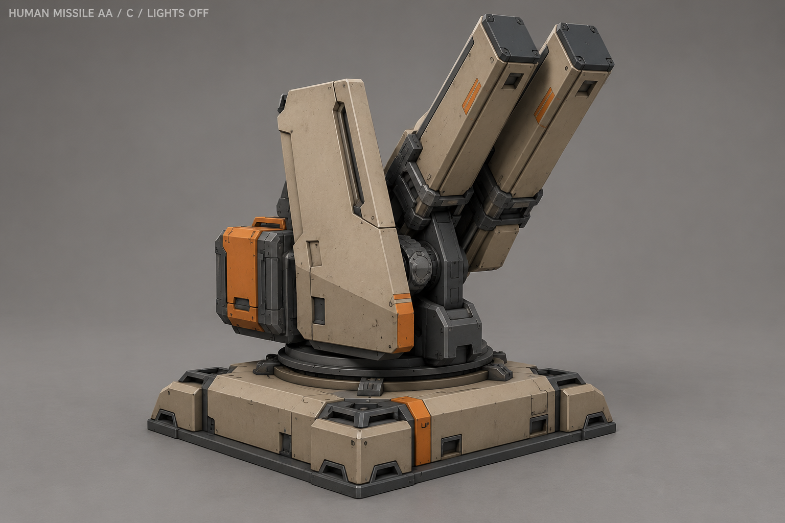
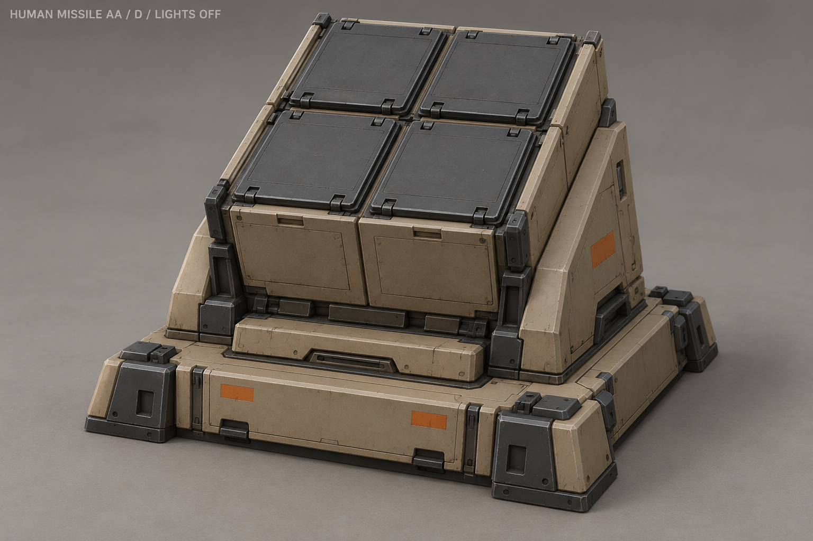
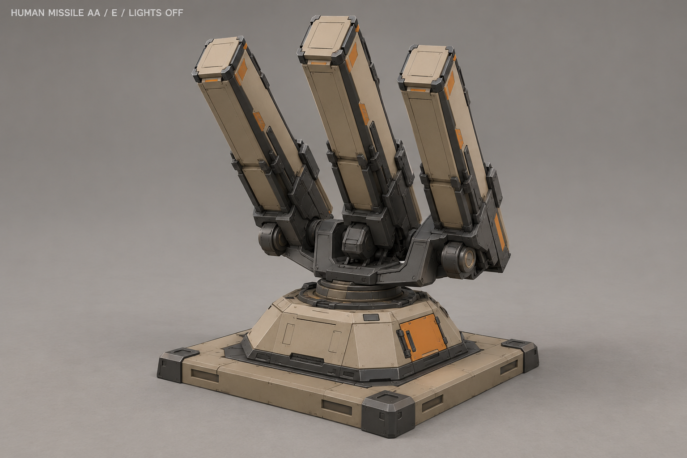
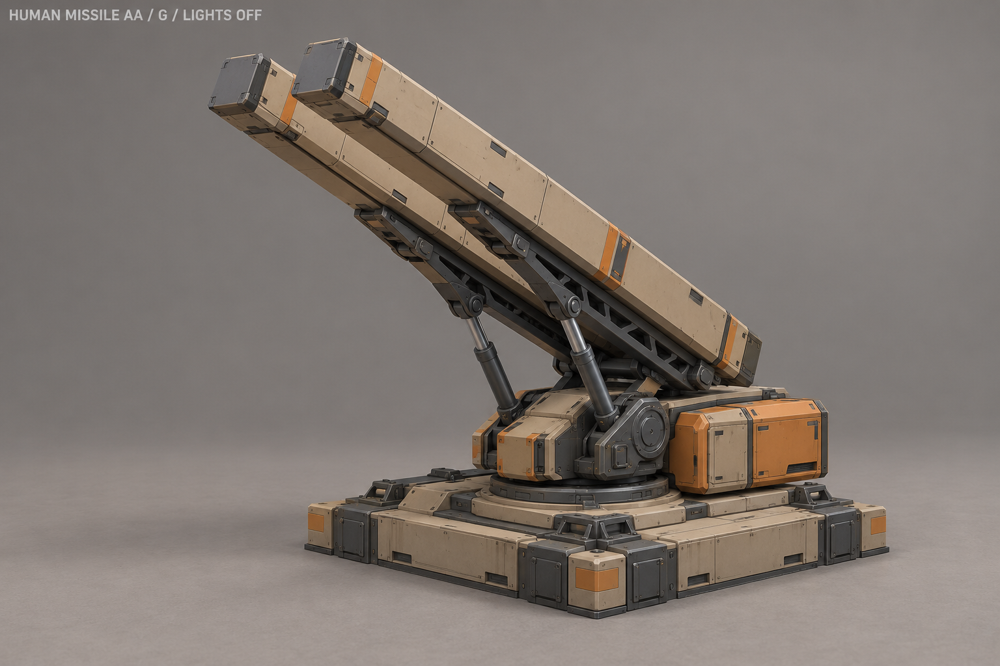
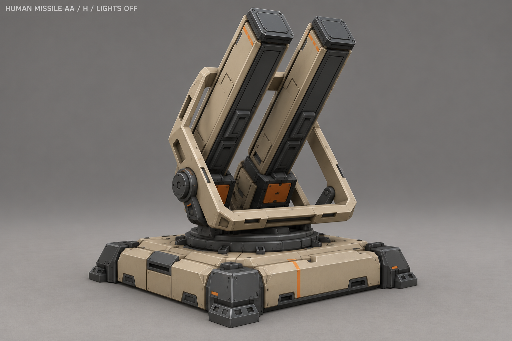

A «Спаренные кассеты»

Два длинных узких ракетных контейнера на общей люльке.
Подвижные части и будущий пуск
Общий поворот и наклон кассет; крышки и эффект старта отдельно.
В референсе все крышки закрыты. Огонь, дым и ракета в полёте создаются отдельно. Движение следует цели и событию пуска; число контейнеров не задаёт боезапас или обязательную перезарядку.
B «Боковые блоки»

Два разнесённых двухконтейнерных блока по бокам центральной рамы.
Подвижные части и будущий пуск
Поворот центральной рамы и общий наклон пусковых блоков.
В референсе все крышки закрыты. Огонь, дым и ракета в полёте создаются отдельно. Движение следует цели и событию пуска; число контейнеров не задаёт боезапас или обязательную перезарядку.
C «Односторонний щит»

Асимметричный щит и две наклонные ракетные кассеты.
Подвижные части и будущий пуск
Щит поворачивается с установкой, кассеты наводятся по высоте.
В референсе все крышки закрыты. Огонь, дым и ракета в полёте создаются отдельно. Движение следует цели и событию пуска; число контейнеров не задаёт боезапас или обязательную перезарядку.
D «Ячеистый блок»

Закрытый наклонный блок из четырёх пусковых ячеек.
Подвижные части и будущий пуск
Открытие крышки выбранной ячейки по событию пуска; корпус неподвижен.
В референсе все крышки закрыты. Огонь, дым и ракета в полёте создаются отдельно. Движение следует цели и событию пуска; число контейнеров не задаёт боезапас или обязательную перезарядку.
E «Веер»

Три узких контейнера с небольшим веерным разносом.
Подвижные части и будущий пуск
Поворот общей рамы и наклон пускового блока.
В референсе все крышки закрыты. Огонь, дым и ракета в полёте создаются отдельно. Движение следует цели и событию пуска; число контейнеров не задаёт боезапас или обязательную перезарядку.
F «Барабан контейнеров»

Три ракетных контейнера вокруг индексируемого барабана.
Подвижные части и будущий пуск
Пошаговый поворот барабана для выбора контейнера, наведение общей люльки.
В референсе все крышки закрыты. Огонь, дым и ракета в полёте создаются отдельно. Движение следует цели и событию пуска; число контейнеров не задаёт боезапас или обязательную перезарядку.
G «Продольная люлька»

Удлинённая пусковая люлька с двумя тонкими кассетами и подъёмными тягами.
Подвижные части и будущий пуск
Поворот платформы, подъём люльки и работа связанных тяг.
В референсе все крышки закрыты. Огонь, дым и ракета в полёте создаются отдельно. Движение следует цели и событию пуска; число контейнеров не задаёт боезапас или обязательную перезарядку.
H «Защитная рама»

Две кассеты внутри лёгкой защитной рамы.
Подвижные части и будущий пуск
Поворот и наклон рамы с контейнерами; эффект запуска отдельно.
В референсе все крышки закрыты. Огонь, дым и ракета в полёте создаются отдельно. Движение следует цели и событию пуска; число контейнеров не задаёт боезапас или обязательную перезарядку.